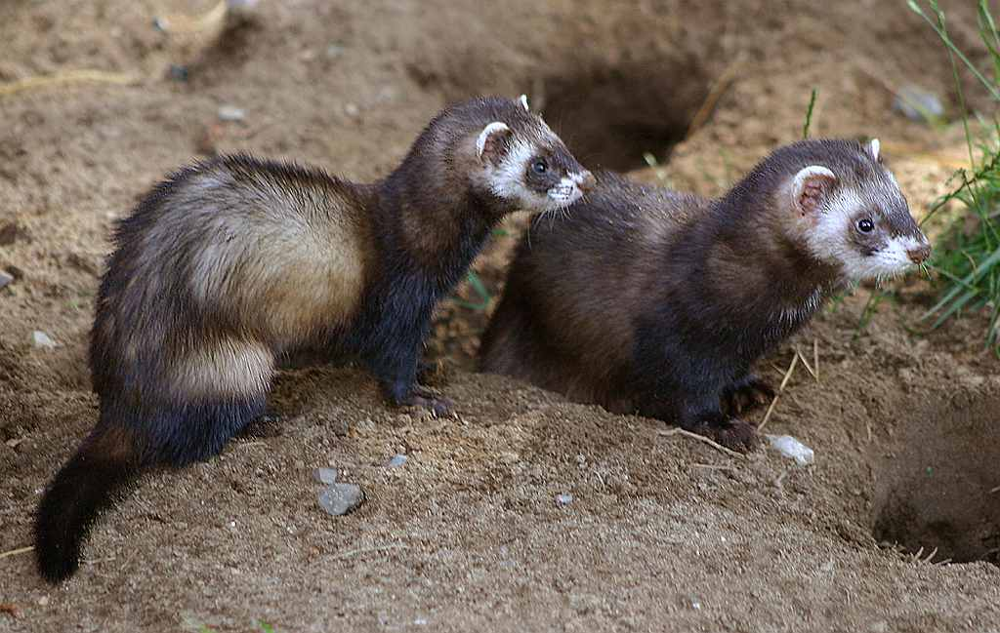
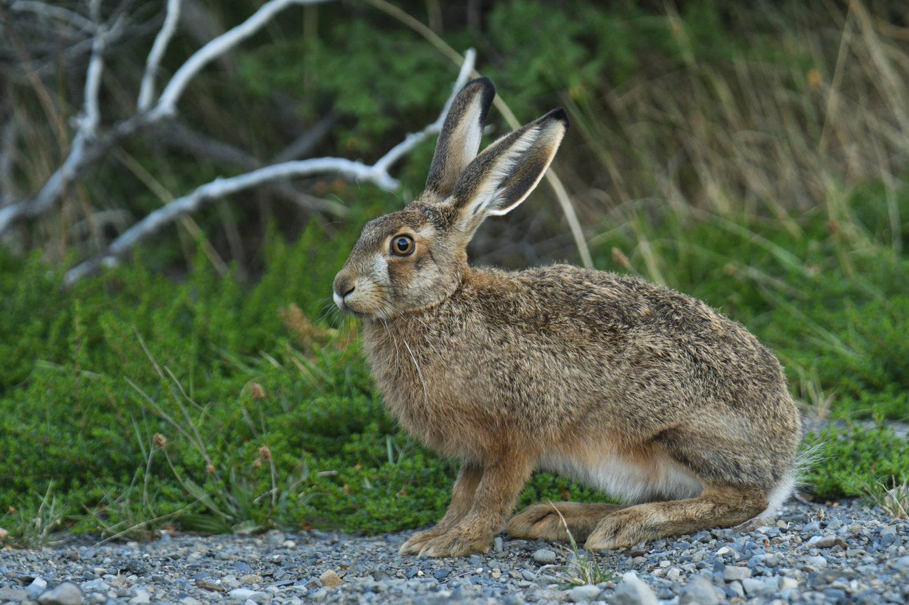

| Uluk |
Kirjeldus |
Elupaik |
Jahihooaeg |
|
Pruunkaru
|
Suur ja tugev, paks karv, väga hea haistmismeel. |
Metsad, eriti tihedamad ja inimasustusest kaugemad alad. |
1. augustist 31. oktoobrini (va poegadega emakarule) |
|
Hunt
|
Koerlaste sugukonda kuuluv suur kiskja, sotsiaalne loom. |
Metsad ja avatud maastikud. |
1.novembrist jahiaasta lõpuni (Saare ja Hiiu maakonnas 1.oktoobrist 31.märtsini) |
|
Põder
|
Suurim hirvlane, tuntud oma muljetavaldavate sarvede poolest. |
Metsad, eelistab niiskeid alad ja võsastikke. |
15. septembrist 15. detsembrini (15.-30.septembrini ainult põdrapull) |
|
Punahirv
|
Uhke välimusega suur hirvlane, tuntud oma võimsate sarvede poolest. |
Metsad ja metsaäärsed alad. |
15.augustist 15.veebruarini, sealhulgas pullidele alates 1.septembrist ja lehmadele ja vasikatele kuni 31.jaanuarini |
|
Metssiga
|
Tugeva kehaehitusega, kõverad kihvad, kohandub erinevate elupaikadega. |
Metsad, põllumaad ja soostunud alad. |
Aastaringselt (jahti jahikoeraga 1. oktoobrist 31. märtsini) |
|
Metskits
|
Väiksem hirveliik, kiire ja vilgas, tuntud oma elegantsi poolest. |
Lehtmetsad, põllud, heinamaad ja põõsastikud. |
1. juunist 31. jaanuarini (kitsedele ja talledele 1. septembrist 31. jaanuarini) |
|
Ilves
|
Kiskja, lühike saba ja tuttidega kõrvad. |
Metsad ja metsaäärne tihnik. |
1. detsembrist jahiaasta lõpuni (va kutsikatega emasilves) |
|
Rebane
|
Väike kiskja, punakas karvkate. |
Metsad, põllumaad, avatud maastikud. |
1.augustist kuni 31.märtsini |
|
Kährikkoer
|
Väike kiskja, tuntud oma triibulise näo poolest. |
Metsad, põõsastikud ja inimasustuse lähedal. |
Aastaringselt |
|
Mink
|
Väike veeloom, kärplaste sugukonnast, tuntud oma läikiva karva poolest. |
Jõgede ja järvede läheduses, märgalad. |
Aastaringselt |
|
Tuhkur

|
Pikk ja painduv keha, kärplaste sugukonnast, tuntud oma uudishimu poolest. |
Metsad, põllumaad, taluhooned. |
1. oktoobrist 31. märtsini |
|
Kobras
|
Tuntud oma lamedate sabade ja tugevate hammaste poolest. |
Jõgede, ojade ja järvede ääres. |
1. augustist 15. aprillini |
|
Halljänes

|
Kiire, hea hüppaja, tuntud oma pikkade kõrvade poolest. |
Põllud, heinamaad, metsaservad. |
1. oktoobrist jahiaasta lõpuni |
|
Valgepõsk-lagle
|
Tuntud oma valge põsepiirkonna poolest Tavalise hane kehaga. |
Avaveed, rannikualad, siseveekogud. |
10. september - oktoober |
Sinikael-part

|
Värvikas part, tuntud oma iseloomuliku sinikaelsuse poolest. |
Järved, tiigid, aeglase vooluga jõed. |
20 august - oktoober |
|
Nurmkana
|
Väike metslind, hea peitumisoskusega, suure vuti välimusega. |
Niisked niidud, roostikud, võsa. |
September-oktoober |